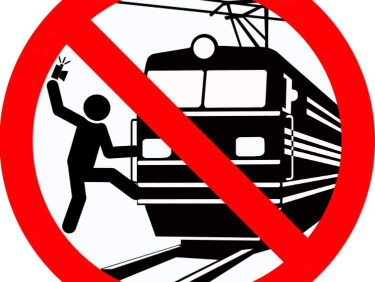

Warning: 'Cool Selfie Could Cost Your Life'
A campaign uses road sign-style warning signs to highlight the dangers when taking personal photos in hazardous scenarios.
A guide to taking safer selfies has been issued by police in Russia after a growing number of personal portraits ended in death and injury.
Some 10 people have been killed and 100 hurt already this year in accidents while snapping hazardous images, from posing with a loaded gun or a hand grenade to climbing on to a railway bridge.
The safety campaign uses road sign-style warning signs to highlight the dangers when taking personal photos.
These include a figure holding a selfie stick on a rail line and one taking a selfie at the top of an electricity pylon.
A leaflet published by the interior ministry warned: "A cool selfie could cost you your life."
Tips included in the pamphlet include the cautionary note that "a selfie with a weapon kills".
It comes after a 21-year-old woman in Moscow accidentally shot herself in the head while taking a selfie and holding a pistol.
At the start of the year, two youths blew themselves up in the Urals while taking a selfie holding a hand grenade with the pin pulled out.
The mobile phone on which the selfie was taken survived the explosion to show what had happened.
A teenager in the Ryazan region was killed in May while attempting to take a selfie after climbing on to a railway bridge and ended up touching live wires.
Yelena Alexeyeva, an aide to the interior minister, said: "Unfortunately we have noted recently that the number of accidents caused by lovers of self-photography is constantly increasing.
"Since the beginning of the year we are talking about some hundred cases of injuries for sure."
She also said selfies had caused "dozens of deadly accidents".
Ms Alexeyeva added: "The problem really exists and leads to very unfortunate consequences.
"Before taking a selfie, everyone should think about the fact that racing after a high number of 'likes' could lead him on a journey to death and his last extreme photo could turn out to be posthumous."